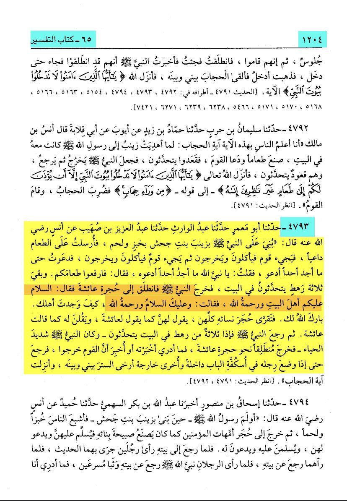
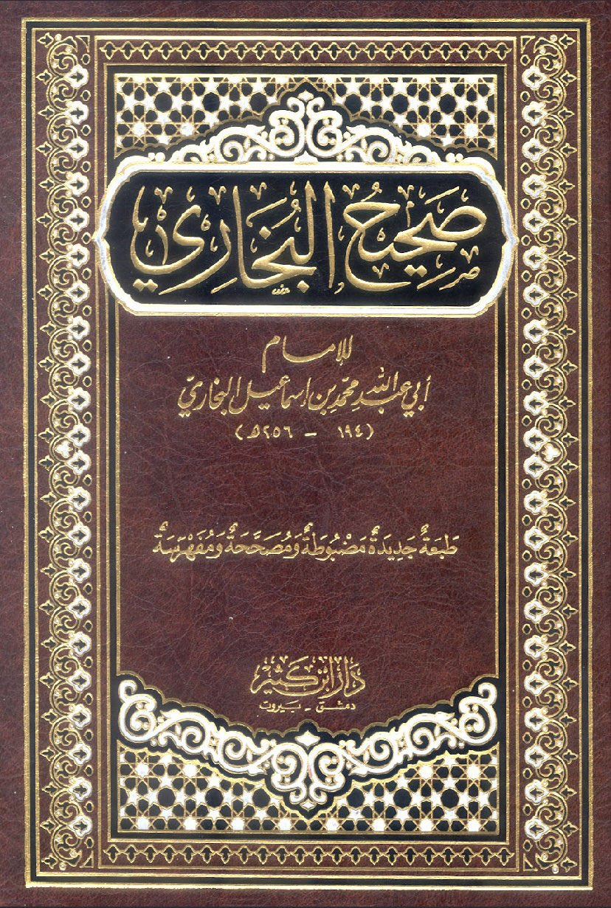
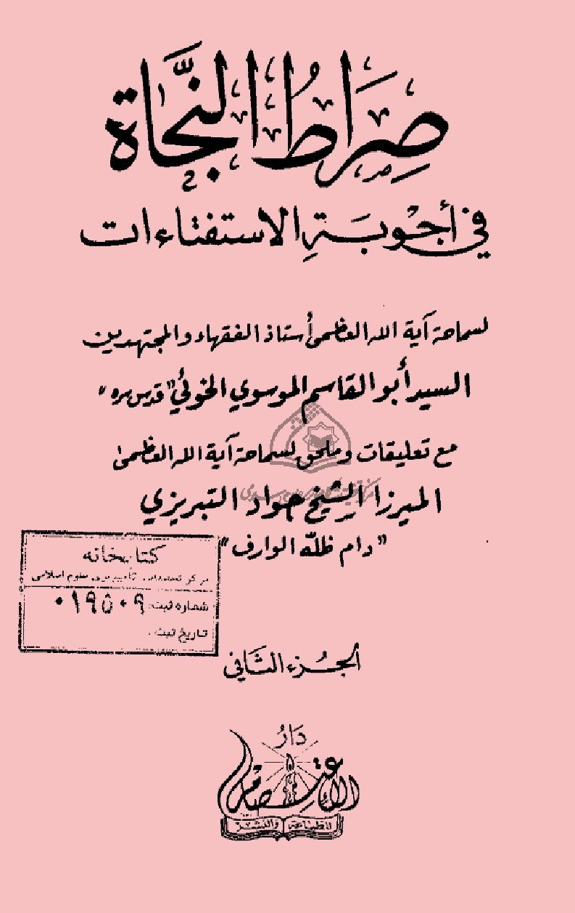
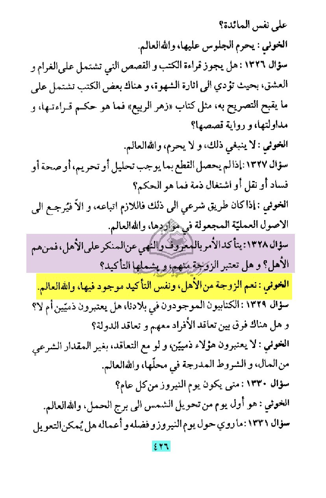
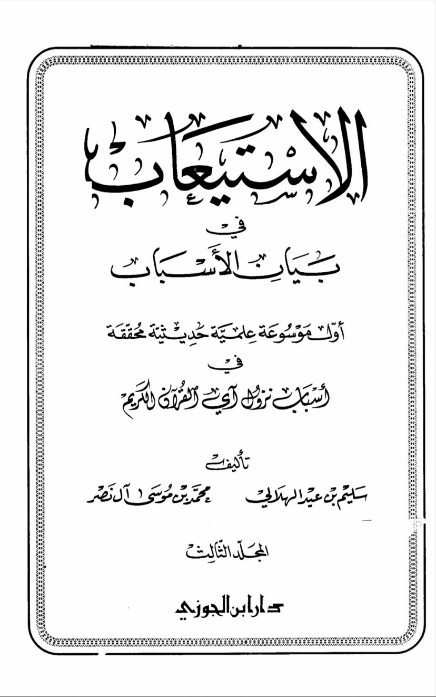
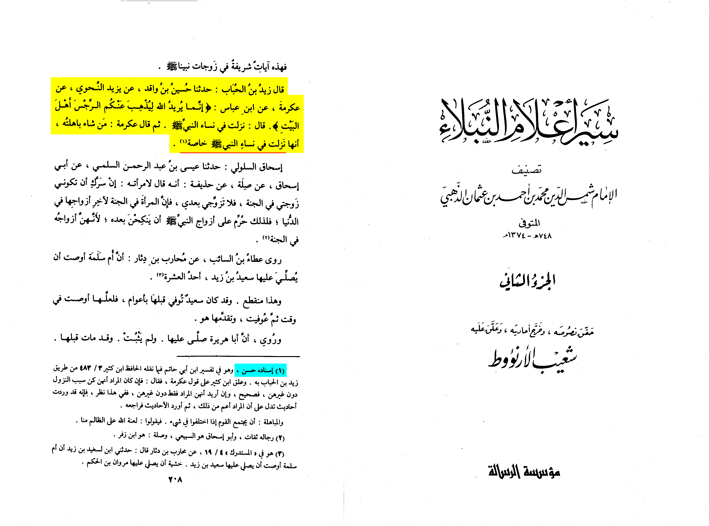
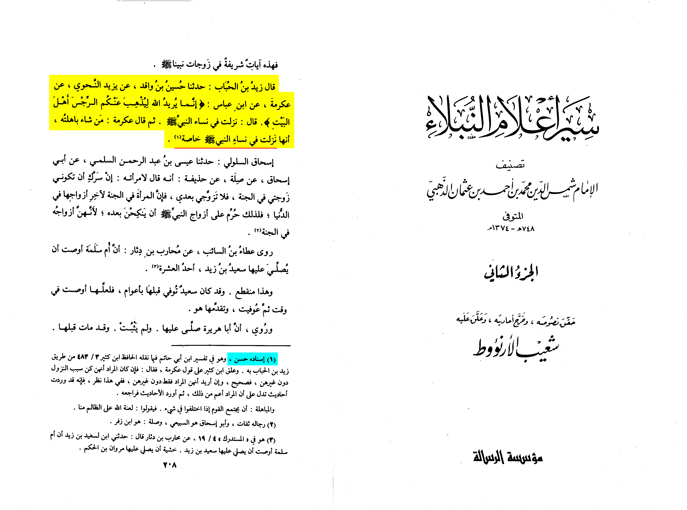

Surah Al-Ahzaab (The Clans)
33:33
stay at home, and do not flaunt your finery as they used to in the pagan past;
keep up the prayer, give the prescribed alms, and obey God and His Messenger.
God wishes to keep uncleanness away from you, people of the [Prophet’s] House, and to purify you thoroughly.
Translation: Abdul Haleem | Medinan
Here the whole ayah uses female pronouns which shows that its talking about
the wives of the prophet صلى الله عليه وسلم
like when it says وَقَرۡنَ or وَلَا تَبَرَّجۡنَ تَبَرُّجَ ٱلۡجَـٰهِلِیَّةِ or وَأَطِعۡنَ ٱللَّهَ وَرَسُولَهُۥۤۚ ect...
and then Allah says یُرِیدُ ٱللَّهُ لِیُذۡهِبَ عَنكُمُ ٱلرِّجۡسَ أَهۡلَ ٱلۡبَیۡتِ وَیُطَهِّرَكُمۡ تَطۡهِیرࣰا, we know from
the context of the ayah that this is clearly talking about the wives of the prophet
A common objection by the shia is that : "Allah uses the male pronoun in the word یُطَهِّرَكُمۡ"
Now this is easily answered by saying that the leader of Ahlul bayt, the prophet عليه السلام, is included in it


The prophet SAW said: to A’isha, Peace be upon you, Ahl al Bayt
He acknowledged she was from, Ahl al -Bayt


Shia scholar al-khoei was asked are the wives part of the ‘Ahl’ and he replies yes
Sirat al-Najjat volume 2 page 426

 Here is the interpretation of Ibn ‘Abbas (33:33) in which he said:
«This verse was specifically revealed for the wives of the Prophet ﷺ»
Hasan👍
‘Ikrima RA says the same thing here

Hasan chain👍
بسم لله الرحمن الرحيم
The claims that the Shias make is that The wives of the prophet are not Ahlul Bayt,
and thus even using our sources out of contexts (Sahih Muslim 2408d) that indicates that they aren’t,
however in 2408b says
This hadith has been narrated on the authority of Zaid b. Arqam through another chain of
transmitters and that 2408d was a different wording “the rest of the hadith is the same but with this
variation of wording that lie ahead said” meaning that this was Zaid (RA)’s opinion as said in 2408a (basically,
2408a and 2408d is what Zaid (RA) said about the Ahlul Bayt and his opinion but with some changes of words)
But the Prophet Muhammad (SAW) did call his wives ahlul bayt during Zainab’s (RA) wedding [Sahih Muslim 1428 a]
And did mentioned the fact Umm Salamah (RA) was under the cloak that the Ahlul Bayt (AS) were under
[Jami at-Tirmidhi 3205]
[Jami at-Tirmidhi 3787]
And the prophet mentioned them as his Ahlul Bayt in a dua
[Mishkat al-Masabih 932]
And one more Hadith mentioning them as Ahlul Bayt when the prophet(SAW) went to their houses with
Jabir Ibn Abdullah (RA) [Sahih Muslim 2052 d]
So in conclusion yes, they are ahlul bayt
Here is the interpretation of Ibn ‘Abbas (33:33) in which he said:
«This verse was specifically revealed for the wives of the Prophet ﷺ»
Hasan👍
‘Ikrima RA says the same thing here

Hasan chain👍
بسم لله الرحمن الرحيم
The claims that the Shias make is that The wives of the prophet are not Ahlul Bayt,
and thus even using our sources out of contexts (Sahih Muslim 2408d) that indicates that they aren’t,
however in 2408b says
This hadith has been narrated on the authority of Zaid b. Arqam through another chain of
transmitters and that 2408d was a different wording “the rest of the hadith is the same but with this
variation of wording that lie ahead said” meaning that this was Zaid (RA)’s opinion as said in 2408a (basically,
2408a and 2408d is what Zaid (RA) said about the Ahlul Bayt and his opinion but with some changes of words)
But the Prophet Muhammad (SAW) did call his wives ahlul bayt during Zainab’s (RA) wedding [Sahih Muslim 1428 a]
And did mentioned the fact Umm Salamah (RA) was under the cloak that the Ahlul Bayt (AS) were under
[Jami at-Tirmidhi 3205]
[Jami at-Tirmidhi 3787]
And the prophet mentioned them as his Ahlul Bayt in a dua
[Mishkat al-Masabih 932]
And one more Hadith mentioning them as Ahlul Bayt when the prophet(SAW) went to their houses with
Jabir Ibn Abdullah (RA) [Sahih Muslim 2052 d]
So in conclusion yes, they are ahlul bayt